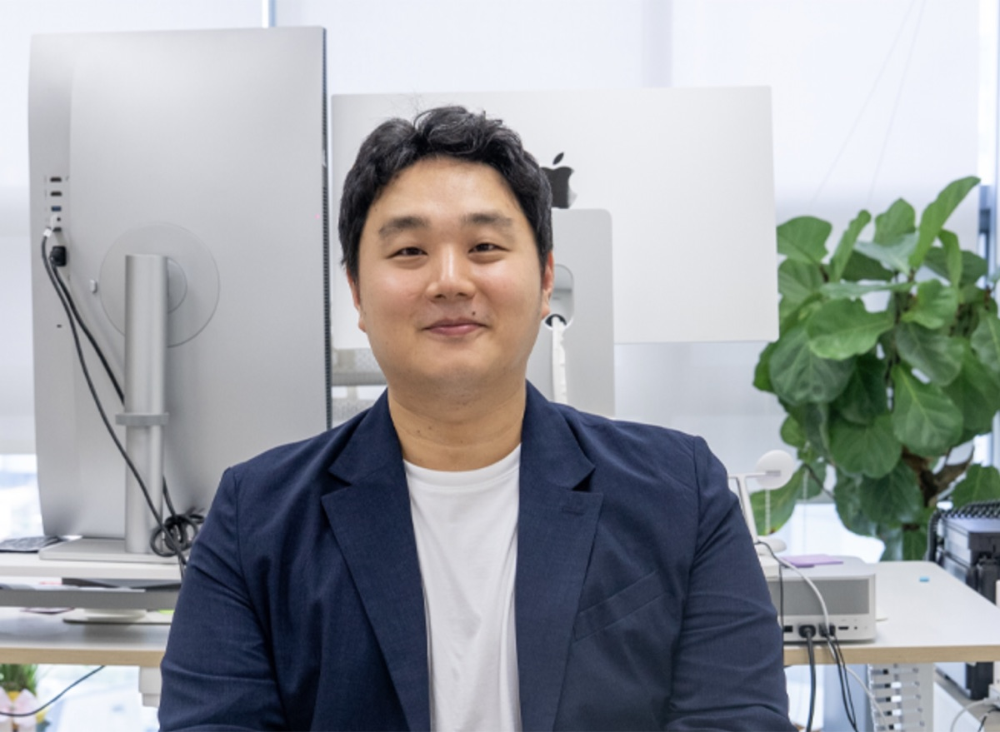

Members
Our Team
HAICoLab — Human-AI Collaboration Lab for Data-Centric Research. Graduate students and undergraduate research interns in the Division of English, Sogang University.
Professor

Yoonseok Heo 허윤석
Assistant Professor · Department of English Literature and Linguistics, Division of English
- ResearchHuman-AI Collaboration · AI Literacy · Human-centered AI · Data-centric AI · Large Language Models / NLP
- EducationPh.D. Computer Science and Engineering, Sogang University (2023)
Visiting Researcher, Carnegie Mellon University (2022)
M.S. Computer Science and Engineering, Sogang University (2018)
B.S. Computer Science and Engineering, Sogang University (2016) - OfficeJ825, Sogang University
Graduate Students
M.A. students in TESOL, Graduate Program in English, Sogang University.
M.A. Student
Ikramova Sevinch
TESOL, Department of English Literature and Linguistics · 4th semester
Research
M.A. Student
Tran Thanh Ngan
TESOL, Department of English Literature and Linguistics · 4th semester
Research
Undergraduate Research Interns
Undergraduate researchers in the Department of English Literature and Linguistics, Division of English, Sogang University.
Undergraduate Intern
조소영 (Soyoung Cho)
Department of English Literature and Linguistics, Division of English, Sogang University
Research
Undergraduate Intern
이서우 (Seowoo Lee)
Department of English Literature and Linguistics, Division of English, Sogang University
Research
Undergraduate Intern
남고은 (Goeun Nam)
Department of English Literature and Linguistics, Division of English, Sogang University
Research
Undergraduate Intern
김현재 (Hyunjae Kim)
Department of English Literature and Linguistics, Division of English, Sogang University · 2nd year
Research
Join Our Lab
언어와 AI의 접점에 관심 있는 학부생·대학원생을 찾고 있습니다. 전공에 관계없이 인문학적 시각으로 AI를 연구하고 싶은 학생은 이메일로 연락해 주세요.